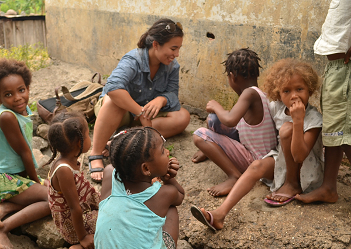

<html>	
<body style="background-color:cfdedf;">
	</body>
	</html>
<html>
<A HREF="index.html">Home</A>

<head>
		<Title><Sample https://github.com/jessbastidas/jessicabastidas.git</Title>
		<link rel="stylesheet" type="text/css" href="style.css" />
	</Head>
	<Body>
<h1>The Fund for Education Abroad and S&atilde;o Tom&eacute; and Pr&iacute;ncipe</h1>

<h2>MICA's Unspoiled Africa Trip</h2>
<h2>Notes and a few images from presentation</h2>
<div style="text-align: center;"></div>
<p>Located off the West African coast, S&atilde;o Tom&eacute; and Pr&iacute;ncipe served as a strategic part of the slave trade creating a diverse ancestry of various European and West African people that trade brought to the islands. The beauty of the island's tropical ecology has potential for the development of tourism. Poor communications and lack of infrastructure have kept the islands relatively isolated and undeveloped, but there has been steady growth in the number of visitors.</p>
<div style="text-align: center;"></div>
<p>Agriculture is labor-intensive, and the percentage of people dependent on agriculture continues to decline. Historically, the country has always been an agrarian society with settlements in widely dispersed plantations. Since independence in 1975, there has been a trend toward urbanization. With 44 percent of the population now considered urban and 60 percent of the population living near the capital, there is about 60,000 people on the island with the majority under the age of thirty.</p>
<p>Small towns are focal points for the religious, commercial, and administrative life of people living outside the plantations. Agriculture and small service industries are the major sectors of the economy. Fishing remains an important activity in coastal communities. Traditionally, the plantation economy exported cocoa and coffee and imported rice, beans, and fish to feed the plantation workers. Today, cocoa is the major export, accounting for over 90 percent of foreign exchange earnings. Cocoa and export crops such as coffee, coconuts, and palm kernels are still grown on the plantations. Imports include machinery, electrical equipment, food, and petroleum products from partners such as Portugal, France, and Angola.</p>
<div style="text-align: center;"></div>
<p>The language is a Luso-African Creole derived from the languages spoken by Africans brought by the Portuguese, with a great many words from Portuguese. This language was formed in the fifteenth and sixteenth centuries. 
At independence in 1975, twenty large Portuguese landoweners owned 93 percent of the land. Over eleven thousand native smallholders were crowded into the remaining land with tiny holdings called glebas. Squatters moved into abandoned areas to grow native crops for subsistence and sale. In 1992, land redistribution was begun to give squatters and small farmers secure ownership of their land and make more land available to households that wanted to farm. </p>
<div style="text-align: center;"></div>
<p>As a poor island microstate, S&atilde;o Tom&eacute; has limited options as a result of small markets, poor infrastructure, high transportation costs, and a lack of trained personnel and entrepreneurs. The traditional pattern of seeking state patronage remains entrenched, and avoiding labor on the plantations is still a paramount concern of most people. Overseas development aid is the main source of income for the state. In this economic climate, corruption and inefficiency abound, public indebtedness is growing, and there are periodic riots over shortages.</p>
<div style="text-align: center;"></div>
<p>Commercial Activities: Smallholders grow root crops, vegetables, plantains, and bananas for local consumption. Industry is virtually nonexistent except for a few processing plants for food, beverages, and soap. Logging has contributed to the economy but has had a negative effect on the environment. The natural beauty and relatively healthy and safe environment have potential for tourism and ecotourism. Some investment in hotels and other tourist facilities has taken place</p>
<div style="text-align: center;"></div>
 <p>Santana is located on the eastern part of S&atilde;o Tom&eacute; and is the fourth largest city after S&atilde;o Tom&eacute;, Trinidade and Neves with a population of 6,969 for the town. It serves as the capital of the Cantagalo district. In Santana, we interviewed local fishermen on the nature of their spirituality. Some practice a mixture of Animism (originating from mainland Africa from areas such as Mosambique and Angola) with Catholocism instituted by the Portuguese. Additionally, local women come to help pull in the boats. They carry large baskets on their heads to hold the fish, snails, squid, and shark that is caught at sea. In the slideshow, you can see Carmen skillfully gutting a shark while children play in the sand. While in Santana, we did small drawings and paintings of the people and the landscape. Additionally, we created found object pieces and sand sculptures with the children.</p>
 <div style="text-align: center;"></div>
<p>Recently, a school has been opened in the Capital run by Brazilians. The goal of the school is to educate Sao Tomeans in a variety of crafts so that they can then utilize the skillsets to begin their own businesses in order to alleviate poverty. Crafts include woodworking, jewerlymaking, paper making, book binding, embroidery, weaving, and so on.</p>
<div style="text-align: center;"></div>

<p>I worked with the paper making and book binding students to learn how to make their unique paper fashioned from the trunks of banana trees. The process is exceptionally complex and begins with hacking the trunks into wheel forms with a machete. Next, the 'wheels' are cut into smaller pieces which are then collected into a large concrete container. Similar to wine makers, the pieces are crushed with one's feet and then left to ferment. Afterwards, ash is collected from the local bakery. The large stones and debris are shifted out with screens and the ash is then boiled in giant metal cylinders in order to create a natural acid. The acid is used to break down the larger pieces into more fibrous materials. Through repeated washing, draining, and eventual blending, a pulp is created. Lastly the pulp is suspended in a liquid which sits on the surface of a screen before it is set aside to dry. Some of the screens have raised designs embroidered into them which transform into raised reliefs in the dried paper. The paper is used to create lanterns, books, folders, and other crafts. As part of our cultural exchanged, we sought to educate the craftsmen on how to market their artwork. Internet access is fairly new and blogging, websites, etsy, and other forms of marking and public relations are essential in order to support the artisans on this remote island community.</p>
<div style="text-align: center;"></div>

<p>This video shows excerpts from two different plantations. One is still used to harvest cocoa in order to produce chocolate. The other, is located closer into the island's interior. You have to hike along the mountainside through dense forest to reach the platform that supports a now crumbling building. Stacks of colorful cocoa stand in stark contrast to the molding facade. The face of the building almost appears salvageable until one ventures to the back where the entire backside seems to have been cleaved in two. 
While in Africa, I witnessed the Tchiloli dance ceremony. We painted and drew from the live performers. All of this was made possible through the Fund For Education Abroad which is a private scholarship that all students with financial need can apply for. I think that the importance of study abroad can not be understated as it is a great catalyst for artmaking, language aquisition, and global awareness.(Link to their youtube video about the Fund for Education Abroad on my home page).</p>
<div style="text-align: center;"></div>
</body>
</html>

